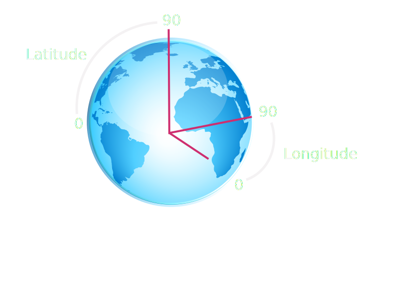

Koordinater - Longitude/Latitude
- Steinkjer
- 64.015019 | 11.495263
- 64° 0' 54.0684'' N | 11° 29' 42.9468'' E

- WGS 84
- ID: EPSG:4326
- Behandler Jorden som en kule
- Spherical Mercator
- ID: EPSG:900913
- Behandler Jorden som en ellipse
- WMS
- Kartbilder - Mest brukt, Kjapt
- PNG/JPEG/SVG - Google v3, krever mer grafikkrendering
- WFS
- Kartobjekter for interaksjon
- XML/Json
- OpenLayers
- pros - Stort API med mye fleksibilitet
- cons - Mye med ikke så bra dokumentasjon
- Leaflet
- pros - Enkelt og greit
- cons - Lite API
- Google Maps
- pros - God dokumentasjon
- cons - Litt låst til Google. Ikke Open
- Andre
- Kart fra openstreetmap
- Vise bilder fra søk med popup
- Clustring av bilder
- Håndtere flere lag